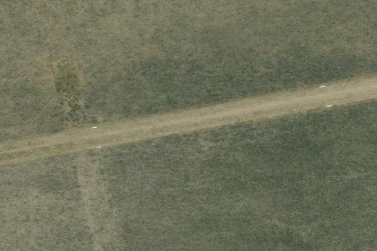

HENRYS LAKE
U53 · ID

Aerial imagery source: Esri, Vantor, Earthstar Geographics, and the GIS User Community
| Identifier | U53 |
|---|---|
| State | ID |
| Runway length | 4,600 ft |
| Runway width | 170 ft |
| Surface | TURF |
| Runway | 06/24 |
| Elevation | 6,596 ft |
| Ownership | public |
| CTAF | 122.9 |
| Coordinates | 44.63475, -111.34269444 |
Notes
[idaho_itd] State Airfield [shortfield] Location Overview Henry's Lake Airport (U53) sits about three miles southeast of Island Park in Fremont County, Idaho, tucked into the high country near the Montana border and just outside Yellowstone National Park's west entrance corridor. The state-owned, high-elevation turf airstrip is usually kept in very good condition and lies near the renowned Henry's Lake fishery, though it isn't quite close enough to the lake itself to walk a float tube and fly rod down to the water's edge. The surrounding terrain is classic Island Park high country — open sagebrush flats ringed by forested mountains, with the Henry's Lake Mountains and Centennial Range nearby. Camping & Recreation The airstrip itself is a bare-bones backcountry facility with no services, but it opens the door to some of Idaho's best outdoor recreation. Henry's Lake is famous among anglers for cutthroat, cutbow, and brook trout fishing, and the broader area offers hiking, wildlife viewing, and boating. Nearby Henry's Lake State Park offers developed camping, cabins, and a boat ramp on the lake's south shore, and the small community of Island Park has additional lodging, campgrounds, and supply stops for pilots flying in for a fishing trip or backcountry getaway. Notes & Warnings This is a genuine backcountry strip and should be treated with the respect that implies. Pilots should plan to land on Runway 06 and take off on Runway 24 when wind conditions allow, and there is no winter maintenance, so the field is best considered a warm-season strip. Perhaps most importantly, livestock and big game animals have access to the runway during fall, winter, and spring, so aircraft should never be left unattended on the field during those seasons. Pilots should also be alert to the surrounding mountainous terrain, which can produce challenging wind patterns and turbulence, and summer afternoons in this part of Idaho are prone to building thunderstorms, so a close eye on weather is warranted. With a field elevation around 6,596 feet, density altitude is a real consideration for performance planning, especially on warm days. History Henry's Lake Airport has served the Island Park area since the mid-20th century. The airfield was activated on July 1, 1945, making it one of the older backcountry airstrips in Idaho's aviation network. It's recognized today as a historic Idaho airstrip in Fremont County, part of a broader era when Idaho built out a web of small backcountry fields to serve remote ranches, forest service outposts, and recreational access in the years following World War II. The airstrip is now managed by the Idaho Transportation Department's Aeronautics Division, which maintains over 30 backcountry airstrips across the state as part of its mission to preserve backcountry flying access and promote aviation safety — a legacy that keeps strips like Henry's Lake open to the pilots and anglers who still fly in for the fishing eight decades later.